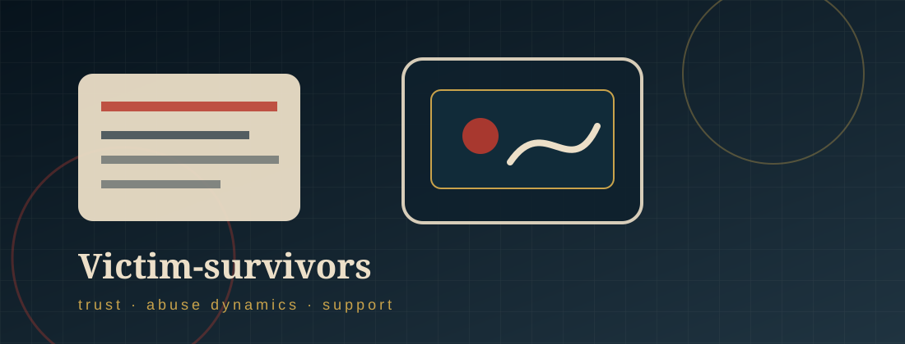

Who is vulnerable
The Victim-Survivors.
Victims are not responsible for the abuse. Vulnerability often comes from trust, relationship pressure, coercive control, and digital access.

§ 01
Who is vulnerable?
- Adolescents and young adults: They often use social media, private messaging, video apps, and online communication as normal parts of relationships.
- Current or former intimate partners: A partner may already have access to private images and later use them as control after conflict or breakup.
- People in abusive relationships: Threats to expose images can become part of intimidation, isolation, emotional abuse, and coercion.
- Online contacts: Offenders may manipulate targets into sending images and then threaten exposure to demand more.
§ 02
Power and control connection
- The Power and Control Wheel helps explain how abuse is not only physical; it can involve intimidation, isolation, emotional abuse, minimizing, denying, blaming, and coercion.
- In nonconsensual image distribution, an offender may use private images to make a victim feel trapped, watched, ashamed, or afraid to leave.
- The threat of exposure can isolate the victim from family, friends, school, work, or support systems.

§ 03
What puts victims in the path of the cybercriminal?
- Believing a private message, direct message, or shared album will remain private.
- Trusting a partner or online contact who later uses images as leverage.
- Using apps where screenshots, downloads, forwarding, and cloud backups are easy.
- Feeling pressure to “prove” love, trust, loyalty, or maturity through intimate images.
- Not knowing where to report threats or how to save evidence safely.
Disclaimer: This website was designed by V.A. as a project for my course. Thank you for visiting my site to learn about nonconsensual distribution of intimate images. The information within this site was accurate at the time of its creation in December 2025. However, please note that this site will not be monitored nor will it be updated. If you have questions about any of the material within it, please see the sites listed in “Help for Victim-Survivors,” and if you believe you are a victim of nonconsensual distribution of intimate images, please report it to your local police.
References
01 Domestic Abuse Intervention Programs. (n.d.). Power and control wheel. https://www.theduluthmodel.org/wheels/
02 Shapiro, L. R. (2023). Online image-based sexual abusers. In Cyberpredators and their prey (pp. 295–334). CRC Press.
03 Wolak, J., & Finkelhor, D. (2016). Sextortion: Findings from a survey of 1,631 victims. Crimes against Children Research Center, University of New Hampshire.